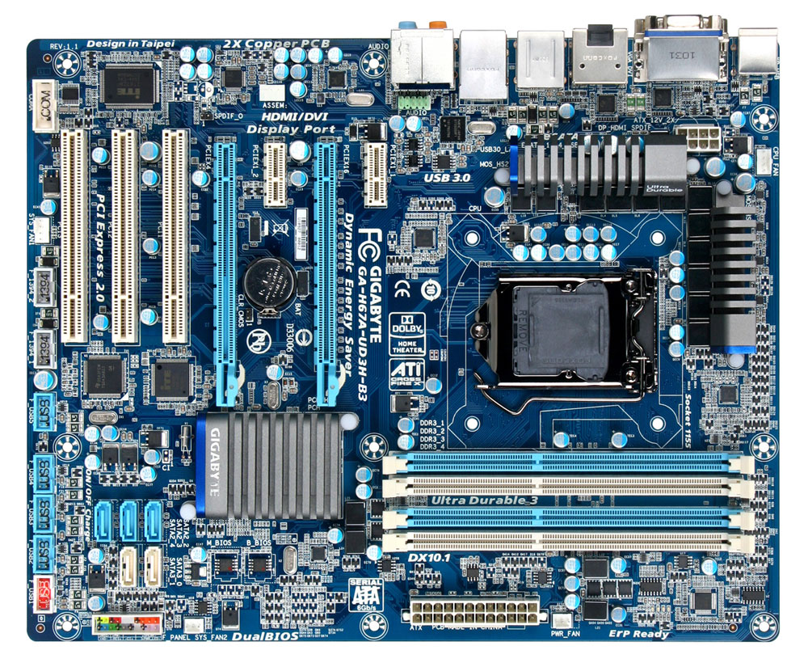

La sigla ATX (Advanced Technology Extended) è uno standard diffuso che riguarda la case, la scheda madre e l'alimentatore di un Personal Computer. Questo standard fu definito inizalmente da INTEL nel 1995, rivisto nel febbraio del 1997 con la release 2.01 che apporta delle leggere modifiche alla versione 2.0 e successivamente nel 2003 esce la versione 2.2 che è tuttora la più recente. Questo standard fornisce delle indicazioni molto specifiche considerando le dimensioni della scheda madre, la posizione degli slot, dei fori per il fissaggio della scheda madre al case,dell'alimentatore e del contenitore, le posizioni e il colore dei connettori, il collegamente dell'alimentazione.
